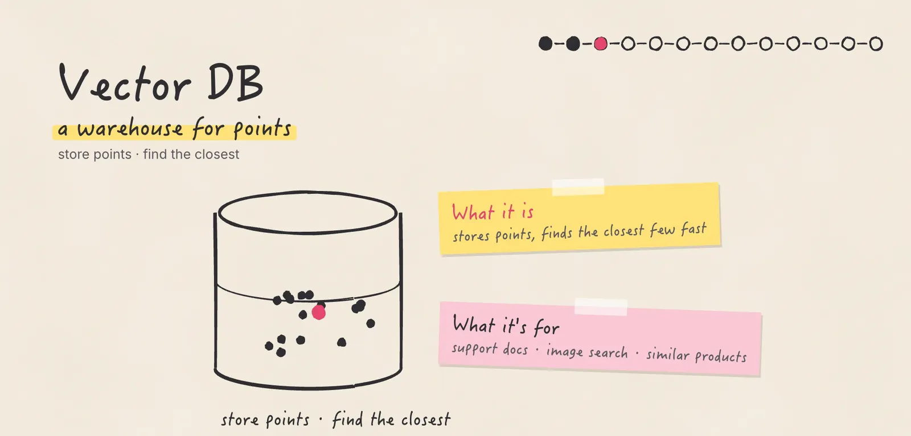

Hi! I'm Janet
I build tools for learning English with AI, and I dive deep into startups.
I like cool, fancy things.
But I'd rather make something I use every day.
As a former VC and startup core member, I'm always diving into startups.
I build these projects for lifelonglifelongadjectivelasting or continuing through the whole of your life learning.
None of them stands alone.
They connect as one system, wovenwovenpast participle of weaveclosely joined into something, like threads in cloth into how I learn.
A short drawing: a girl is bored at her desk with a closed book. She opens it, and a forest grows out of the pages. Leaves fall from the trees and turn into English words while she leans in to read.
Things I've built
6 projectsMy two priorities right now are diving deep into startups and strengthening my English. They’re not separate pursuits—they reinforce each other.
Learning English
Understanding AI & startups
LexiSpeakConversation practice that grades my recorded voice.LexiAIAn advanced learner's dictionary for understanding and using words in context.Writing StationA daily English journal, reviewed one sentence at a time.podcast-digExact quotes from long podcasts, searchable in my Obsidian vault.Startup ResearchHow I read a company: understand the tech, analyze the business.AI Term ExplainerShort videos that explain AI words in plain language.Obsidian vaultwhere the research lands
Learning English
- LexiSpeakConversation practice that grades my recorded voice.
- ← LexiAIsaved words
- → LexiAIunlocks “Can Speak”
- Writing StationA daily English journal, reviewed one sentence at a time.
- ← LexiAIwords to use
- → LexiAIwords used well
- LexiAIAn advanced learner's dictionary for understanding and using words in context.
- → LexiSpeaksaved words
- ← LexiSpeakunlocks “Can Speak”
- → Writing Stationwords to use
- ← Writing Stationwords used well
- ⇄ podcast-digshared transcripts
Understanding AI & startups
- podcast-digExact quotes from long podcasts, searchable in my Obsidian vault.
- ⇄ LexiAIshared transcripts
- → Startup Researchraw material
- → Obsidian vault
- Startup ResearchHow I read a company: understand the tech, analyze the business.
- ← podcast-digraw material
- ← AI Term Explainertech explained
- → Obsidian vault
- AI Term ExplainerShort videos that explain AI words in plain language.
- → Startup Researchtech explained
- → Obsidian vault
Hover or tab to a project to see how it connects. Click to open it.
Research
2 companies · 6 filmsStartups I've researched, and AI terms I've explained on film.
Startups 2
Written with my Startup Research method. The same research can also be published as a video.
AI Term Explainer 6
One AI word per film, in plain language. Watch on YouTube. How they’re made: AI Term Explainer.
 Ep 6 · 5:36MCPOne plug for every AI.
Ep 6 · 5:36MCPOne plug for every AI. Ep 5 · 17:43Tool useHow AI goes from talking to doing.
Ep 5 · 17:43Tool useHow AI goes from talking to doing. Ep 4 · 13:18Long context vs RAGWhen to skip retrieval and paste the whole thing in.
Ep 4 · 13:18Long context vs RAGWhen to skip retrieval and paste the whole thing in. Ep 3 · 16:06RAGAn open-book exam for the AI.
Ep 3 · 16:06RAGAn open-book exam for the AI.
Ep 2 · 11:21Vector databaseA warehouse that finds the closest points fast. Ep 1 · 10:30EmbeddingMeaning turned into coordinates.
Ep 1 · 10:30EmbeddingMeaning turned into coordinates.